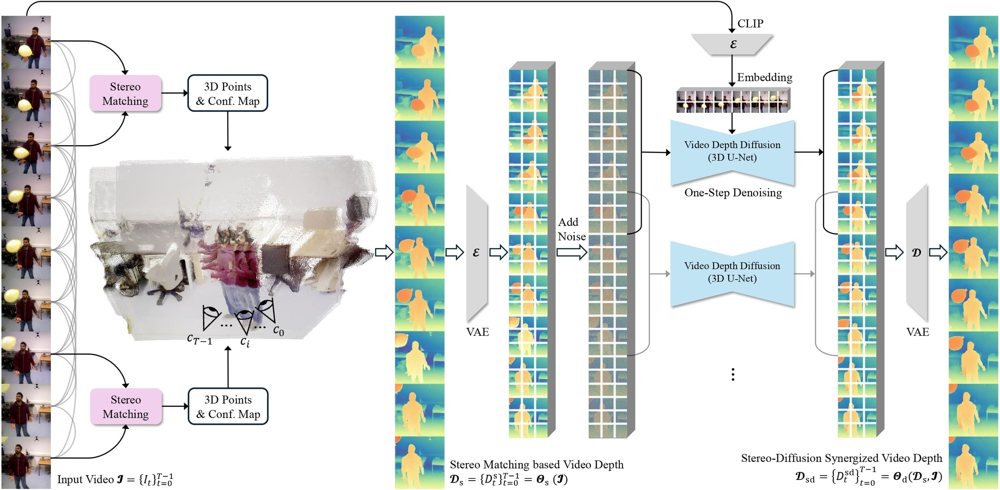
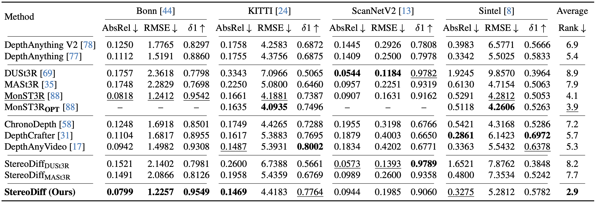

Recent video depth estimation methods achieve great performance by following the paradigm of image depth estimation, i.e., typically fine-tuning pre-trained video diffusion models with massive data. However, we argue that video depth estimation is not a naive extension of image depth estimation. The temporal consistency requirements for dynamic and static regions in videos are fundamentally different. Consistent video depth in static regions, typically backgrounds, can be more effectively achieved via stereo matching across all frames, which provides much stronger global 3D cues. While the consistency for dynamic regions still should be learned from large-scale video depth data to ensure smooth transitions, due to the violation of triangulation constraints.
Based on these insights, we introduce StereoDiff, a two-stage video depth estimator that synergizes stereo matching for mainly the static areas with video depth diffusion for maintaining consistent depth transitions in dynamic areas. We mathematically demonstrate how stereo matching and video depth diffusion offer complementary strengths through frequency domain analysis, highlighting the effectiveness of their synergy in capturing the advantages of both.
Experimental results on zero-shot, real-world, dynamic video depth benchmarks, both indoor and outdoor, demonstrate StereoDiff's SoTA performance, showcasing its superior consistency and accuracy in video depth estimation.
Pipeline of StereoDiff. ① All video frames are paired for stereo matching in the first stage, primarily focusing on static backgrounds, in order to achieve a strong global consistency that provided by global 3D constraints. ② Using the stereo matching-based video depth from the first stage, the second stage of StereoDiff applies a video depth diffusion for significantly improving the local consistency without sacrificing its original global consistency, resulting in video depth estimations with both strong global consistency and smooth local consistency.
Quantitative comparison of StereoDiff with SoTA methods on zero-shot video depth benchmarks. The five sections from top to bottom represent: image depth estimators, stereo matching-based estimators, video depth diffusion models, StereoDiff using other stereo matching methods, and StereoDiff. To make sure a comprehensive evaluation, we used four datasets: Bonn, KITTI, ScanNetV2, and Sintel. We report the mean metrics of StereoDiff across 10 independent runs. MonST3ROPT (OPT: with optimization) can not be evaluated on long video depth benchmarks (i.e., Bonn and ScanNetV2) due to computational constraints. Best results are bolded and the second best are underlined.
No temporal consistency metrics?
The metrics above are not in per-frame manner. All frames in a predicted video depth use same scale and shift factors for affine-invariant evaluation. Temporal inconsistencies will lead to worse metrics. Testing MonST3R on Bonn with per-frame scale and shift yields an AbsRel of 0.0341, much better than the reported 0.0818.